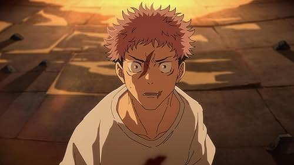

Jujutsu Kaisen is about a young boy named Yuji Itadori who joins a secret organization of sorcerers to fight supernatural creatures called "Curses," after eating a legendary curse's finger, Sukuna. After originally sentenced to death, he is now challneged to eat all 20 of Sukunas fingers and kill the king of curses. As of now there are three seasons of Jujutsu Kaisen and the show has been praised for its animation, fight scenes, and character development. I personally enjoy season 3's animation the most as it is very simplistic in design which alows the animators to focus on expressions and movements and leave room for some insane fight sequences. Standout animation sequences to me are Sukuna vs Mahoraga, Sukuna vs Jogo, and the entirity of the Sendai Colony deadlock . It has also been a commercial success, with the manga selling over 30 million copies worldwide. Iconic characters such as Satoru Gojo and Sukuna have become fan favorites, and the show has a large and dedicated fanbase. Overall, Jujutsu Kaisen is a must-watch for fans of action and supernatural anime.